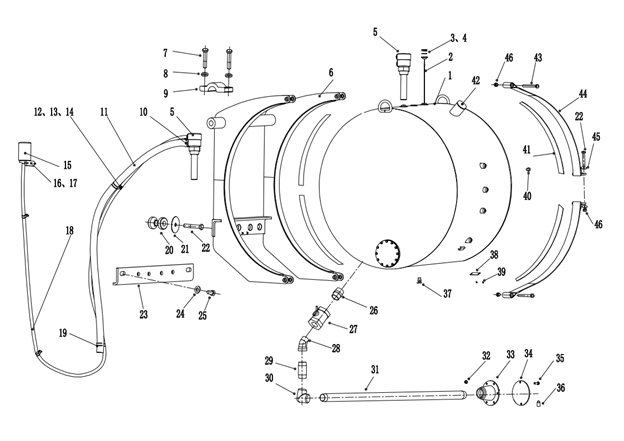

燃油箱安装. · FUEL TANK AND MOUNTING
Спецификация
1
Узел топливного бака
13
Гайка
25
Болт
37
Сливной Болт
2
Уровнемер
14
P-Образный Зажим
26
Соединение
38
Табличка Топливного Бака
3
Болт
15
Фильтр
27
Односторонний Клапан
39
Винт
4
Шайба
16
Болт
28
Отвод
40
Гайка Смотрового Окна
5
Дыхательный Клапан
17
Шайба
29
Коническая Трубка
41
Резиновая Прокладка
6
Кронштейн Топливного Бака
18
Шланг
30
Отвод
42
Крышка
7
Болт
19
P-Образный Зажим
31
Коническая Труба
43
Болт
8
Шайба
20
Амортизационная Прокладка
32
Гайка
4
Хомут
9
Прижимная Планка
21
Шайба
33
Быстроразъёмное Соединение
45
Шайба
10
Т-образный зажим
22
Болт
34
Сборка Крышки
46
Гайка
11
Шланг
23
Кронштейн
35
Болт
12
Болт
24
Шайба
36
Замок
Рис. 1. Установка топливного бака
Топливный бак
Общие сведения
Топливный бак представляет собой горизонтально установленную цилиндрическую конструкцию, расположенную между правой стороной основной рамыи передними и задними колесами транспортного средства.
Управление
Топливный бак вмещает 4800 литров дизельного топлива. Четыре гайки (40) смотрового стекла устанавливаются по наружной окружности топливного бака, наблюдение за уровнем топлива снаружи не требует снятия никаких деталей.
Основные функции дыхательного аппарата (5), установленного в верхней части топливного бака: воздухообмен с внешней средой при падении уровня топлива, сочетание с отстреливанием заправочного пистолета при быстрой заправке, перелив. Внутри топливного бака устанавливается датчик уровня топлива, в процессе использования можно наблюдать за уровнем топлива с помощью указателя уровня топлива в кабине.
Внутри топливного бака устанавливается переключатель низкого уровня топлива, когда уровень топлива ниже установочного уровня топлива, то переключатель низкого уровня топлива выдает сигнал, сигнализатор низкого уровня топлива на приборной панели в кабине горит, предупреждает о низком уровне топлива.
Заправка топливного бака производится через горловины для быстрой заправки, расположенные по обе стороны карьерного самосвала. Заправка топливом производится с использованием пистолета для быстрой заправки, когда уровень топлива достигает до определенного уровня относительно дыхательного аппарата, дыхательный аппарат заставляет топливный бак выдавить, заправочный пистолет автоматически отщелкивается.
Примечание: топливный бак и рама эквипотенциально соединены, что повышает безопасность.
Уход и техническое обслуживание
Периодическое техническое обслуживание должно включать следующие виды работ:
1. Проверить на наличие повреждений и утечек вне бака. По мере необходимости отремонтировать или заменить.
2. Убедиться, что кронштейн надежно закреплен. Проводить регулярное техническое обслуживание, по мере необходимости отремонтировать или заменить.
3. Проверить быстро маслозаправочное отверстие, по мере необходимости отремонтировать или заменить.
4. Убедиться, что на топливной магистрали, на входе и на выходе топливного бака нет загрязнений и в хорошем состоянии, по мере необходимости отремонтировать или заменить.
5. Регулярно проверить внутри топливного бака на наличие ржавчины, пыли или других загрязнений. Если обнаружены какие-либо примеси, промойте и Очистить топливный бак по мере необходимости.
Снятие
Топливный бак можно снять следующим образом:
1. Слить масло из бака в чистый контейнер. Это можно сделать с помощью насоса или другого подходящего устройства. В нижней части топливного бака имеется сливная пробка для масла, а резьбовая заглушка отвинчивается, чтобы полностью слить масло, а затем снова затянуть.
ВАЖНОЕ ПРИМЕЧАНИЕ: проверить уровень топлива перед сливом бака и используйте подходящий контейнер, чтобы предотвратить утечку топлива.
2. Снять все трубки, подключенные к баку, и закройте или вставить все фитинги труб и пометить все разобранные шланги для повторного подключения.
3. Снять все провода, подключенные к топливному баку.
4. Сначала поднять узел топливного бака с помощью подходящего подвесного инструмента и затянить подвесной инструмент, чтобы поддерживать узел топливного бака, когда кронштейн топливного бака удален из рамы.
5. Снять все болты, прокладки, шайбы и т. д., которые закрепляют кронштейн топливного бака на раме.
6. Снять узел топливного бака с карьерного самосвала.
Разборка
Узел топливного бака можно разобрать следующим образом:
1. Снять все узлы отверстий на топливном баке.
2. Снять все заглушки.
3. По мере необходимости вынуть топливный бак из монтажного кронштейна. Снять болты, гайки и т. д., снимить топливный бак.
Осмотр и ремонт
Разборный топливный бак можно проверить следующим образом:
1. Проверить все резьбовые отверстия или заглушки на наличие повреждений и отремонтировать или заменить их по мере необходимости.
2. Проверить внешние и внутренние поверхности на наличие коррозии или повреждений, а также Очистить, отремонтировать или заменить по мере необходимости.
3. Проверить все сварные швы и монтажные кронштейны на наличие повреждений и отремонтировать или заменить их по мере необходимости.
4. Проверить другие кронштейны на узле топливного бака на наличие износа или повреждения. Проверить резиновый ремень, установленный во внутреннем кольце кассеты, и отремонтировать или заменить его по мере необходимости.
Сборка
Топливный бак можно собрать следующим образом:
ВАЖНОЕ ПРИМЕЧАНИЕ: при сборке используйте новые шайбы и прокладки.
1. Убедиться, что на внутренней поверхности и компоненты бака нет каких-либо загрязнений.
2. Осторожно установить крышку отверстия и затянить, затянить все болты, чтобы обеспечить равномерный крутящий момент и правильное уплотнение.
3. Установить комбинированные клапаны на входе и выходе и вспомогательные компоненты.
4. Установить узел маслозаправочного отверстия и соединитьльные детали, затянуть их, чтобы обеспечить хорошее уплотнение и отсутствие утечки.
Примечание: рекомендуется использовать герметик резьбыдля всех трубных резьб.
Установка
Топливный бак можно установить следующим образом:
1. Если кронштейн топливного бака и топливный бак были разобраны, прикрепить один конец ленты тяги к кронштейну и прикрепить кронштейн к раме, закрепить кронштейн соответствующим соединитьльным деталем.
Примечание: обычно легче устанавливать кронштейны, ленты тяги и топливные баки отдельно.
2. Поднять ленты тяги в положение, в котором удобно установить топливный бак.
3. Осторожно поднимить топливный бак и поместить его на кронштейн, убедиться, что смотровое отверстие обращено наружу, и отрегулируйте переднее и заднее положения топливного бака так, чтобы топливный бак находился достаточно далеко от переднего колеса и избежать контакта друг с другом.
Примечание: при повороте переднее колесо должно двигаться назад, поэтому оставляйте достаточное пространство.
4. Закрепить ленты тяги вокруг топливного бака и закрепить болты самоконтрящейся гайкой.
Примечание: затянить болты в соответствии с указанным крутящим моментом, чтобы зафиксировать топливный бак. Не затягивайте его слишком сильно, иначе он повредит топливный бак или ленты тяги.
5. Соединить электрические разъемы на всех топливных баках.
6. Соединить все шланги, снятые из топливного бака.
7. При заправке топливного бака топливом использовать устройство фильтра.
Конструкционные детали - топливный бак
020-0040
Конструкционные детали - топливный бак
020-0040
2
3
Конструкционные детали - топливный бак
020-0040
1
Дополнения - Масса компонентов
200-0090
Конструкционные детали - топливный бак
020-0040
2
4
Дополнения - Масса компонентов
200-0090
Иллюстрации
